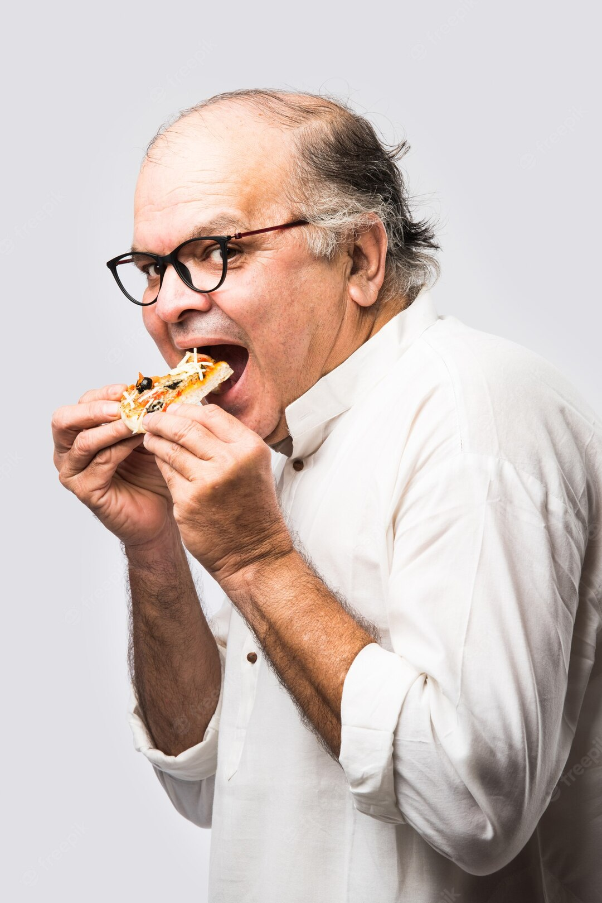

Theodor
Hallihallo, ich bin der Theodor! Und ich bin euer Koch! Schon seit stattlichen 20 Jahren koche ich liebend gerne deftige Sachen. Davon ist Pizza mein Leibgericht. Das Kochen wurde für mich relevant nachdem ich einen Herzinfarkt erlitt. Meine Frau Claudia und ich beschlossen daraufhin zum Wohle meiner und ihrer Arterien nur noch veganes Gut zu konsumieren. Und seitdem hab ich nicht nur meinen geliebten Bierbauch verringern können, sondern auch mehr an Lebensenergie dazugewonnen. Und das will ich an euch weitergeben! Ich bereite euer gesamtes warmes Essen zu. Und ich garantiere euch, dass ihr euch auch null einschränken müsst denn bei diesem veganen Angebot findet jeder Gaumen seinen Schmaus! Ich wünsche euch einen gesegneten Appetit!
Claudia

Hallöchen alle zusammen! Mein Name ist Claudia. Ich bin die Frau vom Theodor und ich bin für das Backen aller Leckerein zuständig. Natürlich auch vegan und teils sogar mit Nussmehl statt herkömmlichen Mehl. Ich garantiere euch, es schmeckt ganz wunderbar und ihr werdet euch die Finger danach lecken! Auch was das Organisatorische angeht, bin ich eure Ansprechpartnerin. Wenn ihr Fragen habt zu unseren Workshops oder zu jeglich anderen Reservierungen... Ich bin für euch da und freue mich euch weiterhelfen zu können. Ihr findet mich dafür täglich hinter der Theke, stets aushelfend und servierend. Ich freue mich auf euch.:)
Cuthbert

Grüß Gott, ich bin der Cuthbert! Ein Scherzkeks vom Lande, der es liebt zu essen, zu trinken und zu lachen. Ich rede leidenschaftlich gerne und viel. Schreiben dagegegen zählt nicht zu einer meiner Stärken, deswegen werde ich das ganze hier kurz und knackig halten. Meine Aufgabe in diesem Team ist das Vernetzen aller Parteien. Bei mir könnt ihr euch melden, wenn ihr als studentische Aushilfskraft helfen wollt oder anderweitig engagieren wollt. Bei Interesse könnt ihr hier das passende Formular ausfüllen. Alles weitere können wir 3D und in Farbe besprechen! Ich freue mich euch bald nebst Uni/ Hochschule anzutreffen!